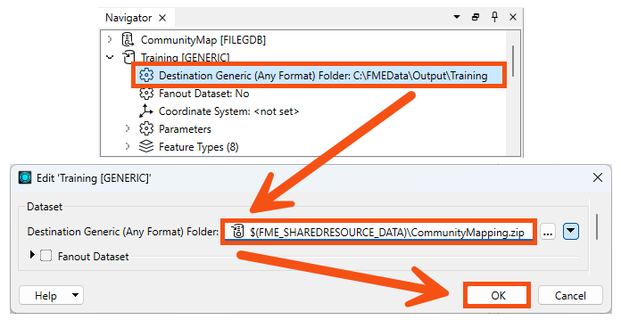
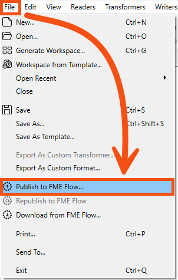
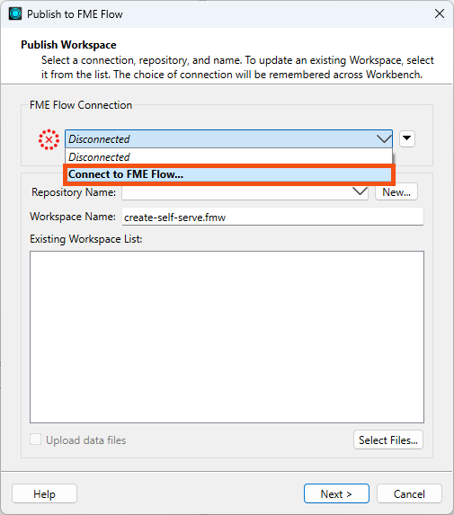
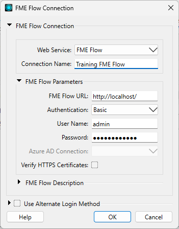
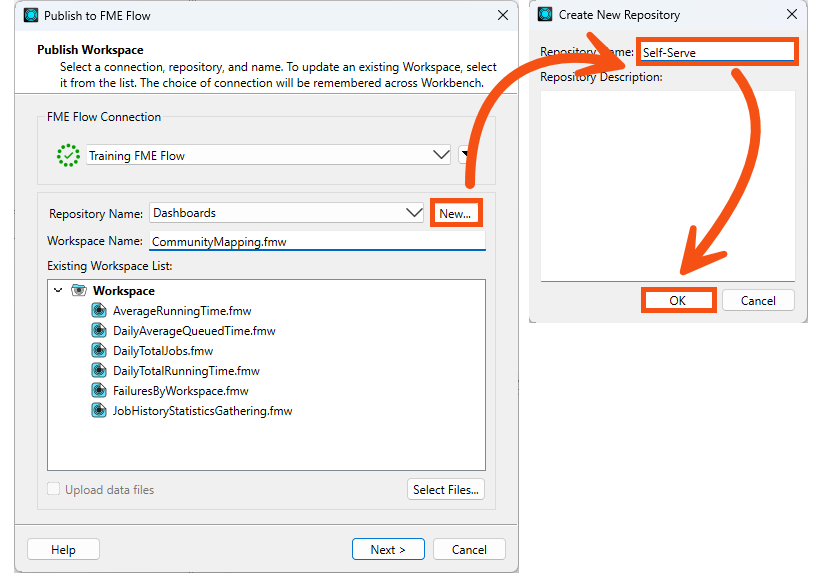
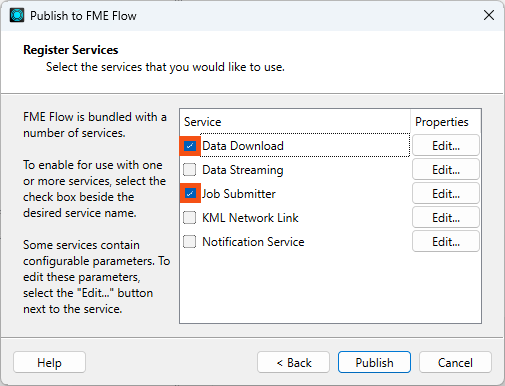
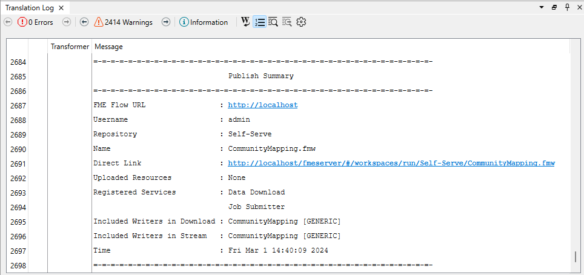

Learning Objectives
After completing this lesson, you’ll be able to:
- Connect FME Form to FME Flow using a web connection.
- Publish a workspace to the web.
- View your published workspace in FME Flow.
Resources
- Starting workspace
- C:\FMEData\Workspaces\IntegrateDataWithTheFMEPlatform\publish-a-self-serve-workspace-to-the-web.fmw
- Complete workspace
- C:\FMEData\Workspaces\IntegrateDataWithTheFMEPlatform\publish-a-self-serve-workspace-to-the-web-complete.fmw
- CommunityMap.gdb.zip
- C:\FMEData\Data\CommunityMapping\CommunityMap.gdb
Publish a Workspace to the Web
Now that Frank has created a self-serve workspace, he must publish it to FME Flow.

The rest of this course assumes you have access to an FME Flow. If you need help installing, licensing, and creating an account for FME Flow, please follow these instructions or speak to your IT department. Options for accessing FME Flow include:
- Install FME Flow on your own machine.
- Access your organization’s FME Flow instance.
- Use an instance provided by requesting an on-demand virtual machine in the footer of the FME Academy home page.
Preparing a Workspace to Publish to FME Flow
Frank already has a workspace that is working well. However, Jennifer notices a problem he must address before publishing to FME Flow. She explains that creating the correct user parameters before publishing makes a much better experience for users running the workspace using FME Flow.
The path for the output data in the workspace is currently hardcoded to “C:\FMEData\Output\Training”. Frank confirms this in the Navigator > Training [Generic] writer > Destination Generic (Any Format) Folder parameter. Having this hard coded is fine when he runs it on his own machine. When he publishes a workspace to FME Flow, the workspace will try to write data to the C:\ drive of the machine hosting FME Flow. However, he can’t assume access to a C:\ drive: FME Flow might not have write access to that drive, or if it’s a Linux machine, it won’t even exist! Jennifer informs him it’s best practice to read and write data that exists in FME Flow's shared Resources folder instead.
To fix this, Frank double-clicks on the Destination Generic (Any Format) Folder parameter and enters “$(FME_SHAREDRESOURCE_DATA)\CommunityMapping.zip”. This path includes the “FME_SHAREDRESOURCE_DATA” user parameter (viewable under User Parameters > FME Flow Parameters) and sets the workspace to write out its results to a ZIP file called CommunityMapping. When he runs the workspace on FME Flow, it will write the data to the shared Data folder for all users to access. We’ll take advantage of that feature in a later lesson.

FME has many useful built-in parameters similar to FME_SHAREDRESOURCE_DATA that let you access information about FME itself, such as the FME build number used to run the workspace or the location of the temporary data folder on the machine running the workspace. These parameters can be used to customize how FME runs in different environments or to create customized reporting on workspace runs.
Learn More About FME Parameters
Learn More About FME Flow Parameters
All file- and folder-based FME formats can be read as or written to ZIP files. Provide a ZIP file for the Dataset parameter of your reader or add “.zip” into the Dataset file path of your writer.
Connect to FME Flow with a Web Connection
Now that Frank has prepared the workspace by creating the correct user parameters, he needs to create an FME Flow web connection before he can publish. Jennifer walks him through the steps.
Remember that database and web connections save authentication information to connect to databases, web services, and APIs. FME stores them on the user’s operating system profile, separating authentication information from the workspace. You can also publish them to FME Flow to allow multiple users to share them without exposing passwords. The FME Flow web connection works the same way as other web connections.
To create an FME Flow web connection, Frank clicks File > Publish to FME Flow:

The FME Flow Connection drop-down says "Disconnected" because this is his first time connecting to FME Flow. He clicks the drop-down and chooses Connect to FME Flow...

If you are attending a Safe Software-hosted training course, the Training FME Flow connection should already be available. If that's the case, feel free to select it and skip ahead.
You can manage Database and Web Connections under Tools > FME Options from the Workbench menu bar on Windows or FME Workbench > Preferences on Mac. You can also create them where needed, such as in a reader or transformer dialog.
The FME Flow Connection dialog opens, and he fills it out to connect to FME Flow running on his own machine:

If you are attending a Safe Software training course, the username is admin, and the password is FMElearnings.
You can connect to your organization’s FME Flow with permission. Get the connection details from your FME Flow Administrator. If you are using FME Flow on your own machine, use http://localhost and your own username and password set during installation.
After filling out the dialog, Frank clicks OK. FME Workbench tests the connection and returns him to the Publish to FME Flow dialog.
Publish a Workspace to FME Flow
Now that he’s set up a web connection, Frank can finish publishing his workspace. He renames it CommunityMapping.fmw by typing it into the Workspace Name field.
FME Flow stores workspaces in repositories. To create a new repository for his workspace, Frank clicks New… and makes a new repository called “Self-Serve.” He clicks OK twice to finish creating his new repository.

Jennifer reminds Frank to consider how his workspace will access data after he publishes it to FME Flow. Many workspaces use data stored locally on the author’s computer, such as C:\FMEData\Data. However, most organizations deploy FME Flow on a different machine that doesn’t have access to that directory. Therefore, data used by workspaces published to FME Flow should be accessible by FME Flow, either as a web or database connection or as a URL.
In the case of our workspace, we use a URL to access the data, so we don't need to upload any data at this step.
If we did need to upload data along with the workspace, we could click the Select Files… button.
This dialog offers the option to publish data to the repository along with the workspace, or to use the FME Flow shared Data. For more information, see the Manage FME Flow Data and Connections course.
Frank clicks OK and then Next.
Before he can publish, Frank has to select service(s) for his workspace to use.
An FME Flow service is an interface for interacting with FME Flow.
Frank has to choose services to control how users receive the data when they run the workspace on FME Flow. These services each provide a different way to interact with the workspace:
Frank makes sure both the Data Download and Job Submitter services are checked. With these checked, anyone can run the workspace and receive a ZIP file of the results. Then, he clicks Publish.

Frank’s workspace and data are now available on FME Flow.
Most of these actions (uploading data, controlling services, and running workspaces) can also be controlled using the FME Flow REST API.
View a Published Workspace
Frank can access his workspace in a web browser using the Direct Link in the Translation Log: http://localhost/fmeserver/#/workspaces/run/Self-Serve/CommunityMapping.fmw.

He clicks the link to open FME Flow and logs in if required.
If you are attending a Safe Software training course, the username is admin, and the password is FMElearnings.
This link directs Frank to the Run Workspace page. Here, he can choose which workspace to run and which service to use, optionally provide an email to send the results to, and set the published parameters. He sees why published parameters are important—creating them in FME Workbench allows him to customize the experience for users running his workspace online.

Exercise
Make sure you follow Frank’s steps.
Leave Us Feedback on This Lesson